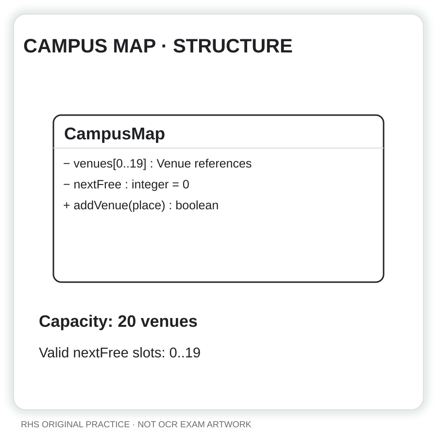

Constructor purpose
When a Gallery is created, explain what the constructor does.

Q5(a) · Worked answer
It initialises the attributes of the new object as it is instantiated.

Complete the Venue class
Fill five blanks. The two attributes remain private; public methods expose their values.
01 class ______
02 private label
03 private floors
04 public procedure new(newLabel,newFloors)
05 label = ______
06 floors = ______
07 endprocedure
08 public function ______()
09 return label
10 endfunction
11 public function getFloors()
12 return ______
13 endfunction
14 endclassQ5(c) · Worked answer
Venue; newLabel; newFloors; getLabel; floors.
01 class Venue
02 private label
03 private floors
04 public procedure new(newLabel,newFloors)
05 label = newLabel
06 floors = newFloors
07 endprocedure
08 public function getLabel()
09 return label
10 endfunction
11 public function getFloors()
12 return floors
13 endfunction
14 endclassWrite the Gallery subclass
Write Gallery inheriting Venue. Include private entranceFee and opensAt, a four-parameter constructor, a call to the Venue constructor, and assignments to both additional attributes.
Q5(d) · Worked answer
Inheritance, private fields, correct constructor and base call, plus attribute assignments.
01 class Gallery extends Venue
02 private entranceFee
03 private opensAt
04 public procedure new(labelIn,floorsIn,feeIn,timeIn)
05 super.new(labelIn,floorsIn)
06 entranceFee = feeIn
07 opensAt = timeIn
08 endprocedure
09 endclassWrite CampusMap.addVenue()
Write addVenue(place): add a reference to the next available array slot, update nextFree and return true or false.

Q5(e) · Worked answer
Capacity check, indexed assignment, nextFree increment and appropriate return values.
01 public function addVenue(place)
02 if nextFree >= 20 then
03 return false
04 endif
05 venues[nextFree] = place
06 nextFree = nextFree + 1
07 return true
08 endfunctionInstantiate and add the Gallery
Create Gallery('Science Hall', 2, 5.00, '09:00'), create a CampusMap, then add the Gallery to it.
Q5(f) · Worked answer
Gallery object and four exact constructor values; CampusMap instance; addVenue using that object.
01 newGallery = new Gallery(
02 'Science Hall', 2, 5.00, '09:00')
03 map = new CampusMap()
04 added = map.addVenue(newGallery)